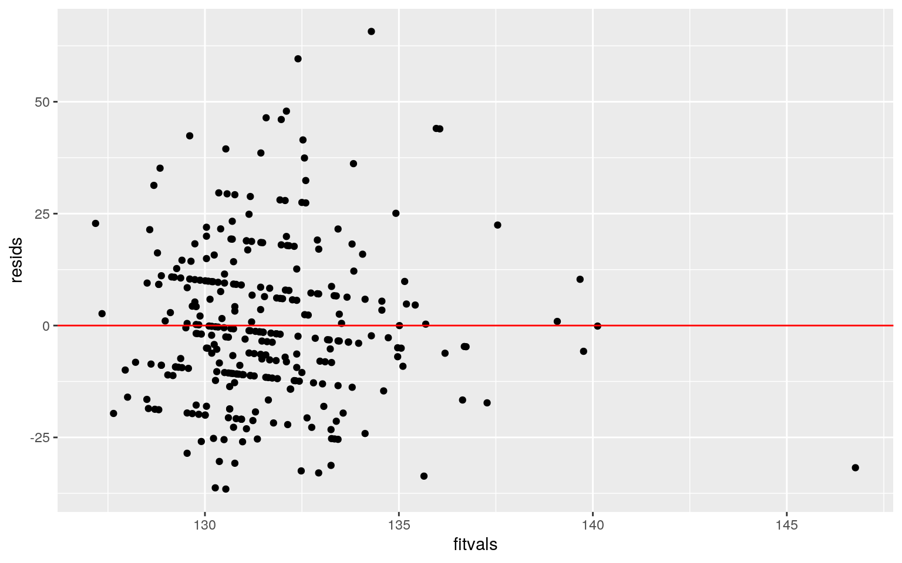

January 1, 0001
Abigail Weber amw4996
Introduction
My data set is looking at heart disease indicators. The hopes for this data set is to look for trends variables such as type of chest pain, blood pressure, and cholesterol levels in order to predict and classify heart attacks. This data was donated by multiple cardiac institutes from Budapest, Zurich, Basel, Long Beach, and Cleveland. The columns in this data set are age, sex, type of chest pain, resting blood pressure, cholesterol, maximum heart rate achieved, resting ecg results, and target value. The age category is age of the patient in years, the sex is coded as a binomial, 1 being male and 0 being female. The type of chest pain is also coded to be 1 = typical angina (sub-sternal chest pain brought on by physical exertion/stress), 2 = atypical angina, 3 = non-anginal pain (non-cardiac chest pain), and 4 = asymptomatic. Resting blood pressure is the patient’s mean arterial pressure in mmHg upon admission to the hospital. Cholesterol is the patient’s serum cholesterol in mg/dl. The maximum heart rate achieved (thalach) is measured in beats per minute. The resting ecg results were also coded to mean 1 = having S-T wave abnormality (could indicate heart attack), 2 = hypertrophy, and 0 = normal. Lastly, the output variable is coded to mean 1 = mroe chance of heart attack and 0 = less chance of heart attack. In total, there are 8 variables.
Reading Code
library(tidyverse)
heart_dat <- read_csv("heart.csv")
temp = replace(heart_dat["cp"], 1:length(heart_dat$cp), as.character(heart_dat["cp"]))
for (i in 1:length(heart_dat$cp))
{
if (heart_dat$cp[i] == 0)
{
temp[i] = "typical angina"
}
else if (heart_dat$cp[i] == 1)
{
temp[i] = "atypical angina"
}
else if (heart_dat$cp[i] == 2)
{
temp[i] = "non-typical angina"
}
else if (heart_dat$cp[i] == 3)
{
temp[i] = "asymptomatic"
}
}
heart_dat <- heart_dat %>% mutate(chest_pain = t(temp[1,]))
heart_dat <- heart_dat %>% select(-c("cp", "exng", "oldpeak", "caa", "fbs", "slp", "thall"))
heart_dat## # A tibble: 303 x 8
## age sex trtbps chol restecg thalachh output
chest_pain[,1]
## <dbl> <dbl> <dbl> <dbl> <dbl> <dbl> <dbl> <chr>
## 1 63 1 145 233 0 150 1 asymptomatic
## 2 37 1 130 250 1 187 1 non-typical angina
## 3 41 0 130 204 0 172 1 atypical angina
## 4 56 1 120 236 1 178 1 atypical angina
## 5 57 0 120 354 1 163 1 typical angina
## 6 57 1 140 192 1 148 1 typical angina
## 7 56 0 140 294 0 153 1 atypical angina
## 8 44 1 120 263 1 173 1 atypical angina
## 9 52 1 172 199 1 162 1 non-typical angina
## 10 57 1 150 168 1 174 1 non-typical angina
## # … with 293 more rowsMANOVA Test
library(tidyverse)
man_project2 <- manova(cbind(trtbps, thalachh)~chest_pain, data = heart_dat)
summary(man_project2)## Df Pillai approx F num Df den Df Pr(>F)
## chest_pain 3 0.17906 9.8005 6 598 2.562e-10 ***
## Residuals 299
## ---
## Signif. codes: 0 '***' 0.001 '**' 0.01 '*' 0.05 '.' 0.1
' ' 1summary.aov(man_project2)## Response trtbps :
## Df Sum Sq Mean Sq F value Pr(>F)
## chest_pain 3 2643 881.03 2.9189 0.0344 *
## Residuals 299 90248 301.83
## ---
## Signif. codes: 0 '***' 0.001 '**' 0.01 '*' 0.05 '.' 0.1
' ' 1
##
## Response thalachh :
## Df Sum Sq Mean Sq F value Pr(>F)
## chest_pain 3 24030 8009.9 17.818 1.149e-10 ***
## Residuals 299 134413 449.5
## ---
## Signif. codes: 0 '***' 0.001 '**' 0.01 '*' 0.05 '.' 0.1
' ' 1heart_dat %>% group_by(chest_pain) %>% summarize(mean(trtbps), mean(thalachh))## # A tibble: 4 x 3
## chest_pain[,1] `mean(trtbps)` `mean(thalachh)`
## <chr> <dbl> <dbl>
## 1 asymptomatic 141. 156.
## 2 atypical angina 128. 162.
## 3 non-typical angina 130. 156.
## 4 typical angina 132. 141.pairwise.t.test(heart_dat$thalachh, heart_dat$chest_pain, p.adj = "none")##
## Pairwise comparisons using t tests with pooled SD
##
## data: heart_dat$thalachh and heart_dat$chest_pain
##
## asymptomatic atypical angina non-typical angina
## atypical angina 0.2273 - -
## non-typical angina 0.9443 0.0713 -
## typical angina 0.0013 1.2e-09 3.2e-07
##
## P value adjustment method: nonepairwise.t.test(heart_dat$trtbps, heart_dat$chest_pain, p.adj = "none")##
## Pairwise comparisons using t tests with pooled SD
##
## data: heart_dat$trtbps and heart_dat$chest_pain
##
## asymptomatic atypical angina non-typical angina
## atypical angina 0.0047 - -
## non-typical angina 0.0105 0.5214 -
## typical angina 0.0241 0.2056 0.4876
##
## P value adjustment method: none1- (0.95^12)## [1] 0.45963990.05/12## [1] 0.004166667The null hypothesis of a MANOVA test is that for each response variable, the means of all groups are equal. The alternative hypothesis is that for at least one response variable, at least one group mean differs. The overall MANOVA was significant with an F value of 9.8005, Pillai number of 0.17906, and a p-value less than 0.05. Because the MANOVA was significant, follow-up one-way ANOVAs for each variable were performed. After each individual ANOVA, it was found that both maximum blood pressure and heart rate showed a mean difference accross chest pain. Therefore, for maximum blood pressure and heart rate, at least one chest pain group differs. Next, t-tests were performed. All in all, there was 1 MANOVA, 2 ANOVAs, and 12 t-tests performed. The probability of a type I error was calculated to be 0.4596399 and the Bonferoni adjusted significance was 0.004166667. The Bonferoni adjusted significance tells us that in order to keep the type I error rate at 0.05, the significance needs to be 0.004166667.For maximum heart rate, there is a mean difference in asymptomatic chest pain and typical angina chest pain, atypical angina chest pain and typical angina, and non-typical angina chest pain and typical angina chest pain. For resting blood pressure, there is a mean difference between asymptomatic and the other 3 chest pains. Some assumptions for MANOVA is that the data must have random sampling, independent observations, and that there are no extreme univariate or multivariate outliers. In this data, the samples met the independent observation assumption, but the sample was not necessarily random because the sample was specialized to patients who have cardiac issues. There are no outliers.
Randomization Test
#age and maximum heart rate
rand_dist<-vector()
for(i in 1:5000){
new<-data.frame(max_heart_rate=sample(heart_dat$thalachh),age=heart_dat$age) #scramble columns
rand_dist[i]<-cor(new$max_heart_rate, new$age)
}
mean(rand_dist <= cor(heart_dat$thalachh, heart_dat$age))## [1] 0cor(heart_dat$thalachh, heart_dat$age)## [1] -0.3985219mean(rand_dist <= -0.2)## [1] 0ggplot(new, aes(age, max_heart_rate)) + geom_point() #random, no correlationggplot(heart_dat, aes(age, thalachh)) + geom_point() #negative correlationrand_cor <- data.frame(cor = rand_dist)
ggplot(rand_cor, aes(cor)) + geom_histogram(bins = 30) + geom_vline(xintercept=-0.3985219) #vertical line is test statistic. it is very unlikely to get this in the null population!For the randomization test, I looked at the relationship between maximum heart rate and age. Since both of these variables are numeric, I tested the correlation between them. The null hypothesis is that there is no correlation between maximum heart rate and age. The alternative hypothesis is that there is a correlation between maximum heart rate and age. To start the randomization test, I scrambled the relationship between maximum heart rate and age. This was done in a for loop 5000 times. After scrambling the data 5000 times, the average correlation between age and maximum heart rate became 0. This is what the data would look like if the null hypothesis was true. Then, I looked at what the correlation is using the original data. The correlation using the real data was -0.3985219. A negative correlation indicates that maximum heart rate declines as age increases. I formed 5000 random relationships between age and maximum heart rate. If the real relationship between age and maximum heart rate is not a random relationship, then the number of times the correlation of the random relationships would be more negative than the real relationship would be less than 5%. Because I observed less than 5%, I can reject the null hypothesis that there is no relationship between maximum heart rate and age. I computed a histogram of the null hypothesis distribution and confirmed that getting a correlation of -0.3985219 is highly unlikely, like I concluded before.
Linear Regression Model
heart_dat1 = heart_dat
heart_dat1$sex <- as.character(heart_dat$sex) #make sex a character variable to make graph nicer.
heart_dat = heart_dat1
heart_dat## # A tibble: 303 x 8
## age sex trtbps chol restecg thalachh output
chest_pain[,1]
## <dbl> <chr> <dbl> <dbl> <dbl> <dbl> <dbl> <chr>
## 1 63 1 145 233 0 150 1 asymptomatic
## 2 37 1 130 250 1 187 1 non-typical angina
## 3 41 0 130 204 0 172 1 atypical angina
## 4 56 1 120 236 1 178 1 atypical angina
## 5 57 0 120 354 1 163 1 typical angina
## 6 57 1 140 192 1 148 1 typical angina
## 7 56 0 140 294 0 153 1 atypical angina
## 8 44 1 120 263 1 173 1 atypical angina
## 9 52 1 172 199 1 162 1 non-typical angina
## 10 57 1 150 168 1 174 1 non-typical angina
## # … with 293 more rowslibrary(sandwich)
library(lmtest)
heart_dat$chol_c <- heart_dat$chol - mean(heart_dat$chol)
#sex, cholesterol, resting blood pressure
project2_fit<-lm(trtbps~chol_c*sex, data=heart_dat)
summary(project2_fit)##
## Call:
## lm(formula = trtbps ~ chol_c * sex, data = heart_dat)
##
## Residuals:
## Min 1Q Median 3Q Max
## -36.538 -11.016 -1.835 9.578 65.710
##
## Coefficients:
## Estimate Std. Error t value Pr(>|t|)
## (Intercept) 132.40344 1.83146 72.294 <2e-16 ***
## chol_c 0.04521 0.02755 1.641 0.102
## sex1 -1.22475 2.20672 -0.555 0.579
## chol_c:sex1 -0.01197 0.03962 -0.302 0.763
## ---
## Signif. codes: 0 '***' 0.001 '**' 0.01 '*' 0.05 '.' 0.1
' ' 1
##
## Residual standard error: 17.48 on 299 degrees of freedom
## Multiple R-squared: 0.01656, Adjusted R-squared:
0.006697
## F-statistic: 1.679 on 3 and 299 DF, p-value: 0.1716summary(project2_fit)$r.squared## [1] 0.0165642ggplot(heart_dat, aes(x = chol_c, y = trtbps, group = sex)) + geom_point(aes(color = sex)) +
geom_smooth(method = 'lm', formula = y~1, se = F, fullrange = T, aes(color = sex))resids <- project2_fit$residuals
fitvals <- project2_fit$fitted.values
ggplot() + geom_point(aes(fitvals, resids))+geom_hline(yintercept=0, color = 'red')
ggplot() + geom_histogram(aes(resids)) #normalityks.test(resids, "pnorm", mean = 0, sd(resids))##
## One-sample Kolmogorov-Smirnov test
##
## data: resids
## D = 0.076491, p-value = 0.0577
## alternative hypothesis: two-sidedbptest(project2_fit)##
## studentized Breusch-Pagan test
##
## data: project2_fit
## BP = 3.7573, df = 3, p-value = 0.2889coeftest(project2_fit) #robust standard errors##
## t test of coefficients:
##
## Estimate Std. Error t value Pr(>|t|)
## (Intercept) 132.403436 1.831458 72.2940 <2e-16 ***
## chol_c 0.045212 0.027552 1.6410 0.1019
## sex1 -1.224753 2.206723 -0.5550 0.5793
## chol_c:sex1 -0.011972 0.039616 -0.3022 0.7627
## ---
## Signif. codes: 0 '***' 0.001 '**' 0.01 '*' 0.05 '.' 0.1
' ' 1The predicted value for resting blood pressure is 132.40344 for females with average cholesterol. The estimated slope for cholesterol on resting blood pressure for females is 0.04521. Holding cholesterol constant, the slope of sex on resting blood pressure is -1.22475. -0.01197 is the difference between the effect of cholesterol on blood pressure between males and females. The standard errors for this data was 1.83146 for the intercept, 0.02755 for chol_c, 2.20672 for sex1 (male), and 0.03962 for chol_c:sex1. From the graph, the data is really noisy. It is hard to draw conclusions, but it looks like sex of 0 indicates a higher resting blood pressure. From the Kolmogorov-Smirnov test, I can fail to reject the null hypothesis to conclude that the true distribution is normal p = 0.0577, normality fine). Based on the Breusch-Pagan test, the population homoskedastic (p-value = 0.2889). The data does not look like it meets linearity assumptions based on the graph of fitvals vs residuals. After correcting standard errors, none of the values changed. The only significant result was the intercept, which gives the predicted value for resting blood pressure for females with average cholesterol. The proportion of the variation in the outcome does your model explain is about 0.0165642.
Bootstrapped Standard Errors
boot_dat <- sample_frac(heart_dat, replace = T)
samp_distn <- replicate(5000, {
boot_dat <- sample_frac(heart_dat, replace = T)
project2_fit<-lm(trtbps~chol_c*sex, data=boot_dat)
coef(project2_fit)
})
samp_distn %>% t %>% as.data.frame %>% summarize_all(sd)## (Intercept) chol_c sex1 chol_c:sex1
## 1 1.998849 0.03381041 2.343274 0.04262255The standard error from the previous problem was 1.831458 for intercept, 0.027552 for chol_c, 2.206723 for sex, 0.039616 for chol_c:sex. Compared to these values, the changes in standard errors that I observed were small. The new intercept value is 1.924201, chol_c value is 0.0343373, sex value is 2.275987, and chol_c:sex value is 0.04427199. All of the standard errors seemed to increase, meaning that the p-values are likely to increase as well.
Logistic Regression Model
library(plotROC)
heart_dat1 = heart_dat
heart_dat1$sex <- as.numeric(heart_dat$sex)
heart_dat %>% group_by(sex) %>% count #way more men than women## # A tibble: 2 x 2
## # Groups: sex [2]
## sex n
## <chr> <int>
## 1 0 96
## 2 1 207project2_fit2 <- glm(sex~chol, data = heart_dat1, family = binomial(link = "logit"))
coeftest(project2_fit2)##
## z test of coefficients:
##
## Estimate Std. Error z value Pr(>|z|)
## (Intercept) 2.8452138 0.6489634 4.3842 1.164e-05 ***
## chol -0.0083242 0.0025272 -3.2939 0.0009882 ***
## ---
## Signif. codes: 0 '***' 0.001 '**' 0.01 '*' 0.05 '.' 0.1
' ' 1exp(coef(project2_fit2))## (Intercept) chol
## 17.2052371 0.9917104predict(project2_fit2, newdata = data.frame(chol = 100), type = "link") #predicted log-odds## 1
## 2.012798predict(project2_fit2, newdata = data.frame(chol = 100), type = "response")## 1
## 0.8821343prob <- predict(project2_fit2, type = "response")
table(truth = heart_dat$sex, predict=as.numeric(prob>.5)) %>% addmargins## predict
## truth 0 1 Sum
## 0 8 88 96
## 1 1 206 207
## Sum 9 294 303(206+8)/303 #accuracy## [1] 0.7062706206/207 #sensitivity/tpr## [1] 0.99516918/96 #specificity/tnr## [1] 0.08333333206/294 #precision## [1] 0.7006803heart_dat1 = heart_dat
heart_dat1$sex <- as.character(heart_dat$sex)
heart_dat1$logit<-predict(project2_fit2,type="link")
heart_dat1%>%ggplot()+geom_density(aes(logit,color=sex,fill=sex))+
theme(legend.position=c(.85,.85))+geom_vline(xintercept=0)+xlab("logit (log-odds)")+
geom_rug(aes(logit,color=sex))
heart_dat1$sex <- as.numeric(heart_dat$sex)
ROC_plot <- ggplot(heart_dat1) + geom_roc(aes(d=sex, m=prob), n.cuts = 0)
ROC_plotcalc_auc(ROC_plot)## PANEL group AUC
## 1 1 -1 0.593901When cholesterol = 0, log-odds is 2.8452138 and the odds of being male is e^2.8452138 = 17.2052371. Accuracy was calculated to be 0.7062706, sensitivity was calculated to be 0.9951691, specificity was calculated to be 0.08333333, and precision was calculated to be 0.7006803. The auc was found to be 0.593901. According to the rules of thumb for auc, this value is bad! The ROC curve let’s us visualize the trade-off between sensitivity and specificity and the auc value summarizes both of these things. Therefore, I can say that the trade off is not good for this regression.
Logistic Regression Model
library(pROC)
library(glmnet)
#in sample
project2_fit2 <- glm(sex~chol, data = heart_dat1, family = binomial(link = "logit"))
summary(project2_fit2)##
## Call:
## glm(formula = sex ~ chol, family = binomial(link =
"logit"),
## data = heart_dat1)
##
## Deviance Residuals:
## Min 1Q Median 3Q Max
## -1.9203 -1.3118 0.7618 0.8836 1.2172
##
## Coefficients:
## Estimate Std. Error z value Pr(>|z|)
## (Intercept) 2.845214 0.648963 4.384 1.16e-05 ***
## chol -0.008324 0.002527 -3.294 0.000988 ***
## ---
## Signif. codes: 0 '***' 0.001 '**' 0.01 '*' 0.05 '.' 0.1
' ' 1
##
## (Dispersion parameter for binomial family taken to be 1)
##
## Null deviance: 378.42 on 302 degrees of freedom
## Residual deviance: 366.65 on 301 degrees of freedom
## AIC: 370.65
##
## Number of Fisher Scoring iterations: 4prob <- predict(project2_fit2,type="response")
class_diag <- function(probs,truth){
#CONFUSION MATRIX: CALCULATE ACCURACY, TPR, TNR, PPV
tab<-table(factor(probs>.5,levels=c("FALSE","TRUE")),truth)
acc=sum(diag(tab))/sum(tab)
sens=tab[2,2]/colSums(tab)[2]
spec=tab[1,1]/colSums(tab)[1]
ppv=tab[2,2]/rowSums(tab)[2]
if(is.numeric(truth)==FALSE & is.logical(truth)==FALSE) truth<-as.numeric(truth)-1
#CALCULATE EXACT AUC
ord<-order(probs, decreasing=TRUE)
probs <- probs[ord]; truth <- truth[ord]
TPR=cumsum(truth)/max(1,sum(truth))
FPR=cumsum(!truth)/max(1,sum(!truth))
dup<-c(probs[-1]>=probs[-length(probs)], FALSE)
TPR<-c(0,TPR[!dup],1); FPR<-c(0,FPR[!dup],1)
n <- length(TPR)
auc<- sum( ((TPR[-1]+TPR[-n])/2) * (FPR[-1]-FPR[-n]) )
data.frame(acc,sens,spec,ppv,auc)
}
class_diag(prob,heart_dat1$sex)## acc sens spec ppv auc
## 1 0.7062706 0.9951691 0.08333333 0.7006803 0.593901auc(heart_dat1$sex,prob)## Area under the curve: 0.5939table(predict=as.numeric(prob>.5),truth=heart_dat1$sex)%>%addmargins## truth
## predict 0 1 Sum
## 0 8 1 9
## 1 88 206 294
## Sum 96 207 303(206+8)/303 #accuracy## [1] 0.7062706206/207 #sensitivity/tpr## [1] 0.99516918/96 #specificity/tnr## [1] 0.08333333206/294 #precision## [1] 0.7006803#out of sample
set.seed(1234)
k=10
data <- heart_dat1 %>% sample_frac
folds <- ntile(1:nrow(data),n=10)
diags<-NULL
for(i in 1:k){
train <- data[folds!=i,]
test <- data[folds==i,]
truth <- test$sex
project2_fit2 <- glm(sex~chol, data=train, family="binomial")
probs <- predict(project2_fit2, newdata=test, type="response")
diags<-rbind(diags,class_diag(probs,truth))
}
summarize_all(diags,mean)## acc sens spec ppv auc
## 1 0.7102151 0.9958333 0.1055267 0.7048404 0.6016807#lasso
set.seed(1234)
y<-as.matrix(heart_dat1$sex)
x <- model.matrix(sex~., data = heart_dat1)[,-1]
x<- scale(x)
cv <- cv.glmnet(x,y, family = "binomial")
{plot(cv$glmnet.fit, "lambda", label=TRUE); abline(v = log(cv$lambda.1se)); abline(v = log(cv$lambda.min),lty=2)}lasso <- glmnet(x,y, family = "binomial", lambda = cv$lambda.1se)
coef(lasso) #age, chol, output## 12 x 1 sparse Matrix of class "dgCMatrix"
## s0
## (Intercept) 8.027044e-01
## age -1.236671e-02
## trtbps .
## chol -2.184052e-01
## restecg .
## thalachh .
## output -4.026796e-01
## chest_painatypical angina .
## chest_painnon-typical angina .
## chest_paintypical angina .
## chol_c -2.800086e-03
## logit 2.325506e-16table(predict=as.numeric(prob>cv$lambda.1se),truth=heart_dat1$sex)%>%addmargins## truth
## predict 0 1 Sum
## 1 96 207 303
## Sum 96 207 303#CV Lasso Model
set.seed(1234)
k=10
data <- heart_dat1 %>% sample_frac
folds <- ntile(1:nrow(data),n=10)
diags<-NULL
for(i in 1:k){
train <- data[folds!=i,]
test <- data[folds==i,]
truth <- test$sex
fit <- glm(sex~age+chol+output,
data=train, family="binomial")
probs <- predict(fit, newdata=test, type="response")
diags<-rbind(diags,class_diag(probs,truth))
}
diags%>%summarize_all(mean)## acc sens spec ppv auc
## 1 0.7068817 0.8996513 0.3126263 0.7355175 0.7162194The in-sample classification accuracy is 0.7062706, sensitivity is 0.9951691, specificity is 0.08333333, and precision is 0.7006803. Sensitivity is pretty good, but the specificity is terrible, showing the trade off between the two values. Accuracy and precision are okay, but not great. The auc was found to be 0.593901, which is bad. This means that so far, the data would not do pretty well in the real world. In other words, it is not a good classifier to distintuish between classes. After performing the 10-fold CV with the same model, the auc value rose to 0.6016807. This is still not a good auc value, but it is better than before. Accuracy was 0.7102151, sensitivity 0.9958333, specificity 0.1055267, and precision 0.7048404. All of these numbers increased when compared to the in sample classification, which is good! After performing LASSO, it looks like the variables that contribute to sex are age, chol, and output. Using these variables, I cross validated the lasso model and got an auc value of 0.7162194, which is better than the in sample auc and the out of sample auc. In our rules of thumb for AUC, this value is considered fair. Additionally, accuracy is 0.7068817, sensitivity is 0.8996513, specificity is 0.3126263, and precision is 0.7355175. Accuracy, sensitivity, and precision are pretty okay, but specificity is low. Compared to the out of sample auc from above (0.6016807), this new auc value is loads better. This new value means that it is a little bit better of a classifyer.